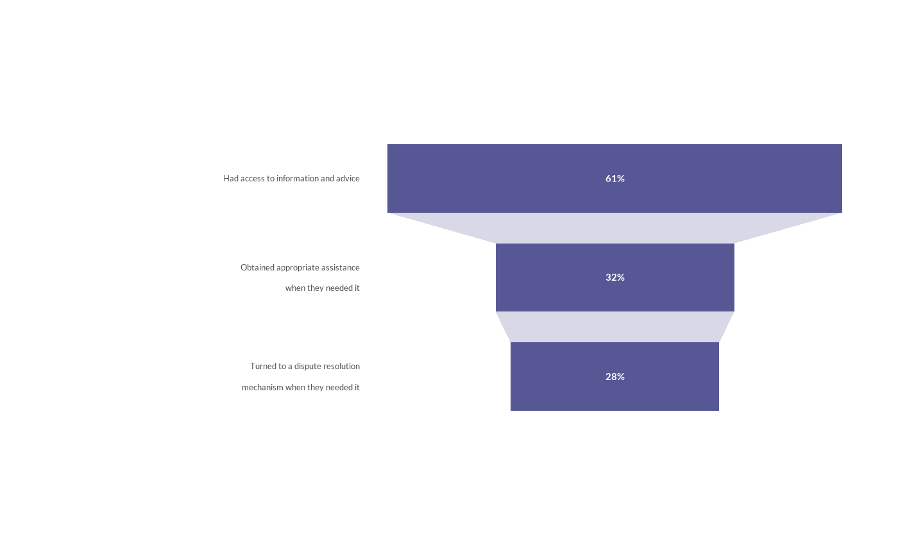

![[Experimental]](figures/lifecycle-experimental.svg)
wjp_funnel() draws the stages of a pathway (e.g., the justice journey) as
centered horizontal bars whose width is proportional to their value, joined
by light connectors, with the value printed inside each bar and the stage
labels in a column at the left.
Usage
wjp_funnel(
data,
target,
grouping,
labels = NULL,
order = NULL,
bar_height = 40,
gap = 18,
connectors = TRUE,
connector_color = "#A8A8C8",
connector_alpha = 0.45,
color = "#575796",
value_face = "bold",
value_size = 11,
value_color = "#FFFFFF",
label_size = 10,
label_colour = "#524F4C",
label_width = NULL,
label_gap = 16,
label_lineheight = 1.22,
panel_width = NULL,
width = NULL,
margins = c(4, 4, 4, 2),
ptheme = WJP_theme()
)Arguments
- data
Data frame containing the data to plot.
- target
String. Column name of the variable with the value of each stage (it sets the width of the bars).
- grouping
String. Column name of the variable with the stage labels.
- labels
String. Column name of the variable with the printed values. Default is
NULL(rounded percentages oftarget).- order
String. Column name of the variable with the display order of the stages (top to bottom). Default is
NULL(data order).- bar_height
Numeric. Height of each bar, in points. Default is
40.- gap
Numeric. Vertical gap between bars, in points. Default is
18.- connectors
Logical. Draw connectors between consecutive bars. Default is
TRUE.- connector_color
String. Color of the connectors. Default is
"#A8A8C8".- connector_alpha
Numeric. Opacity of the connectors. Default is
0.45.- color
String. Color of the bars. Default is
"#575796".- value_face
String. Font face of the values:
"plain","bold","italic","bold.italic", or a weight face such as"semibold.italic"(seewjp_fonts()). Default is"bold".- value_size
Numeric. Size of the values, in points. Default is
11.- value_color
String. Color of the values. Default is
"#FFFFFF".- label_size
Numeric. Size of the stage labels, in points. Default is
10.- label_colour
String. Color of the stage labels. Default is
"#524F4C".- label_width
Numeric. Maximum width of a label line, in points, used to wrap labels without line breaks. Default is
NULL(no wrapping).- label_gap
Numeric. Gap between the label column and the bar area, in points. Default is
16.- label_lineheight
Numeric. Distance between the baselines of label lines, in multiples of the label size. Default is
1.22.- panel_width
Numeric. Width of the bar area, in points. Default is
NULL(seewidth).- width
Numeric. Total width of the figure, in points; the bar area takes the space left by the label column and the margins. Default is
NULL(the bar area fills the device whenpanel_widthis alsoNULL).- margins
Numeric vector of four margins (top, right, bottom, left), in points. Default is
c(4, 4, 4, 2).- ptheme
ggplot theme to apply. Default is
WJP_theme().
Details
The function expects one row per stage: the stage label in grouping and
its value in target. The widest bar (the largest value) spans the whole
bar area; the others are scaled relative to it and centered. Stages are
drawn from top to bottom in data order, or in the order given by the
order column. The printed values come from the labels column as given;
without it, values are printed as rounded percentages.
Stage labels keep their line breaks (newline characters); labels without them
are wrapped to label_width points when it is supplied. They are
right-aligned label_gap points before the bar area, and centered on
their bar.
Geometry is set in points: each bar is bar_height points high, bars are
gap points apart, and margins surround the chart. The bar area is
panel_width points wide, or fills a figure of width points (the label
column is measured with the active font family). With either of them, the
chart has a definite size and wjp_save() needs no width or height.
The label column is measured with systemfonts when it knows the font
family (see wjp_fonts()), and estimated otherwise.
Examples
# Always load the WJP fonts
wjp_fonts()
# Stages of the justice journey (fictional data)
journey <- data.frame(
stage = c("Had access to information and advice",
"Obtained appropriate assistance\nwhen they needed it",
"Turned to a dispute resolution\nmechanism when they needed it"),
value = c(61, 32, 28)
)
journey$text <- paste0(journey$value, "%")
wjp_funnel(
journey,
target = "value",
grouping = "stage",
labels = "text",
width = 468
)
